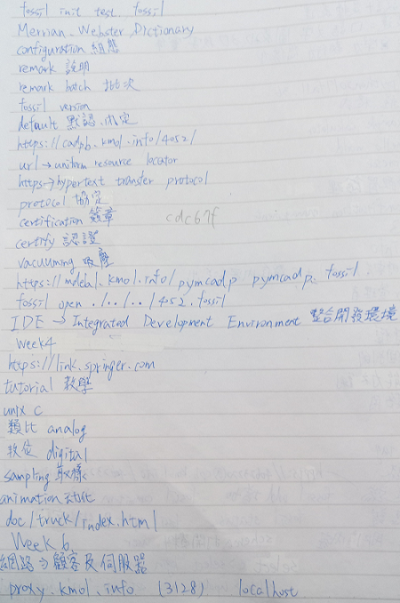
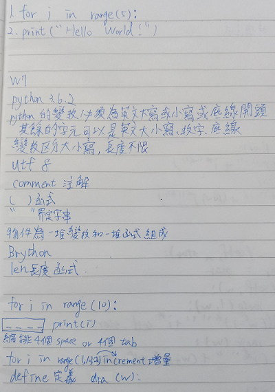

<!doctype html>
<html lang="en">
<head>
    <meta charset="utf-8">
<title>
2017 Spring 機械設計工程系網際內容管理
</title>
    <meta name="description" content="A framework for easily creating beautiful presentations using HTML">
    <meta name="author" content="Hakim El Hattab">
    
    <meta name="apple-mobile-web-app-capable" content="yes">
    <meta name="apple-mobile-web-app-status-bar-style" content="black-translucent">
    
    <meta name="viewport" content="width=device-width, initial-scale=1.0, maximum-scale=1.0, user-scalable=no">
    
    <link rel="stylesheet" href="data/reveal/reveal.css">
    <link rel="stylesheet" href="data/reveal/black.css" id="theme">
    
    <!-- Theme used for syntax highlighting of code -->
    <link rel="stylesheet" href="data/reveal/zenburn.css">

    <!-- Printing and PDF exports -->
    <script>
        var link = document.createElement( 'link' );
        link.rel = 'stylesheet';
        link.type = 'text/css';
        link.href = window.location.search.match( /print-pdf/gi ) ? 'data/reveal/pdf.css' : 'data/reveal/paper.css';
        document.getElementsByTagName( 'head' )[0].appendChild( link );
    </script>

    <!--[if lt IE 9]>
    <script src="data/reveal/html5shiv.js"></script>
    <![endif]-->
</head>

<body>
<div class="reveal">
<!-- Any section element inside of this container is displayed as a slide -->
<div class="slides">
<section data-markdown>
    <script type="text/template">
## 2017Fall  CP

### 虎科大機械設計工程系
###蔡崇廷
###40623220

<small>
Created by [KMOLab](http://kmolab.github.io/blog/)
</small>

[CP 課程網誌](blog/index.html)


    </script>
</section>


						
<section data-markdown>
    <script type="text/template">
# W1-W8學習內容

* W1
   
   機械設計六種表達:口語.文字.圖表.3D.數字.實體
   
    創造力的三個基本要素:自學力.執行力.想像力
* W2
   
    如何修改倉儲密碼與時間還有WiKi的用法
* W3

    用fossil clone複製範例倉儲和網誌與投影片內容然後如何提交到自己的倉儲


    </script>
</section>


						
<section data-markdown>
    <script type="text/template">
* W4

  利用leo 編輯網誌和跑近端與遠端的方法

* W6

  複習W1到W4的內容

* W7

  學習for 迴圈的基本用法

* W8

  用eric6製作計算機的表單和for 迴圈加上基本物件導向
     
     
     
     
     
    </script>
</section>


<section data-markdown>
    <script type="text/template">

#學習心得 

*一開始根本就不知道帶隨身碟要幹嘛,上課看不懂任何東西可聽不懂，
 但重複看示範的影片一步一步跟著做後就能慢慢了解到底再做什麼也
 知道了有隨身碟的話在任何地方都能工作。
 
 *發現了有些事情不一定都要一次就對,有可能一次做對只是矇到的,
 如果有錯誤的話才會更加的有印象也能更加的解自己到底在做什麼


     
    </script>
</section>

<section data-markdown>
    <script type="text/template">
#上課筆記

     
     
     
    </script>
</section>

<section data-markdown>
    <script type="text/template">

</img>
     
     
     
    </script>
</section>


<section data-markdown>
    <script type="text/template">


</img>
     
    </script>
</section>
<section data-markdown>
    <script type="text/template">


</img>
     
    </script>
</section>

<section data-markdown>
    <script type="text/template">


</img>
     
    </script>
</section>


<section data-markdown>
    <script type="text/template">
#自評成績
##70
     
     
    </script>
</section>


<section data-markdown>
    <script type="text/template">
#簡報結束

     
     
    </script>
</section>

</div>

</div>

<script src="data/reveal/head.min.js"></script>
<script src="data/reveal/reveal.js"></script>
<script>
        // More info https://github.com/hakimel/reveal.js#configuration
        Reveal.initialize({
            controls: true,
            progress: true,
            history: true,
            center: true,

            transition: 'slide', // none/fade/slide/convex/concave/zoom

            // More info https://github.com/hakimel/reveal.js#dependencies
            dependencies: [
                { src: 'data/reveal/classList.js', condition: function() { return !document.body.classList; } },
                { src: 'data/reveal/marked.js', condition: function() { return !!document.querySelector( '[data-markdown]' ); } },
                { src: 'data/reveal/markdown.js', condition: function() { return !!document.querySelector( '[data-markdown]' ); } },
                { src: 'data/reveal/highlight.js', async: true, callback: function() { hljs.initHighlightingOnLoad(); } },
                { src: 'data/reveal/zoom.js', async: true },
                { src: 'data/reveal/notes.js', async: true },
                { src: 'data/reveal/math.js', async: true }
            ]
        });
</script>
</body>
</html>

